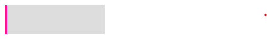

实现下面的图片

方法1 border
方法2 box-shadow inset
方法3 box-shadow 可以看到shadow最左端为-2px，使用时需要注意
方法4 伪元素
方法5 filter drop-shadow
方法6 渐变 linear-gradient
方法7 outline 先用outline描绘轮廓，之后用伪元素遮盖其他边，会导致元素整体变大
方法8 滚动条 ---很厉害
方法9 下划线 很难控制线的宽度
方法10 ::first-letter
1
方法11 list-style(type image position)